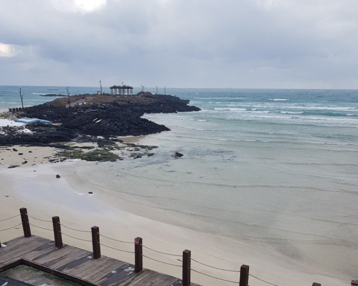
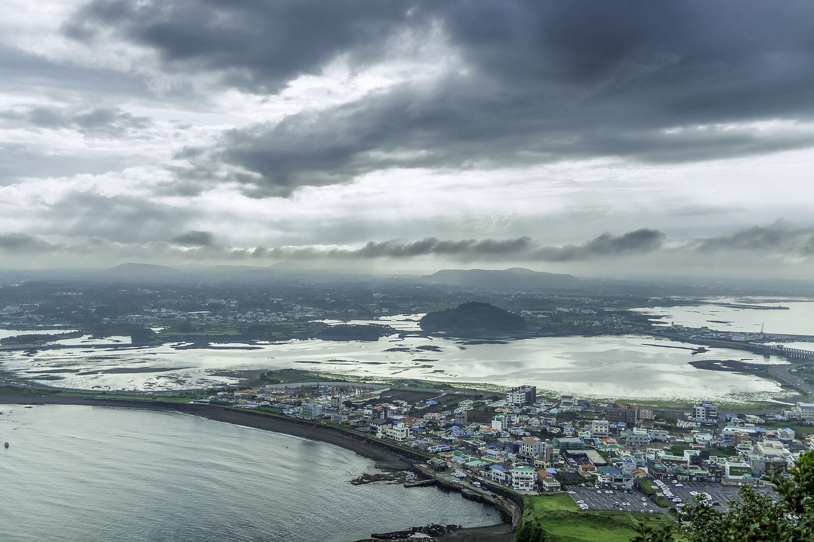
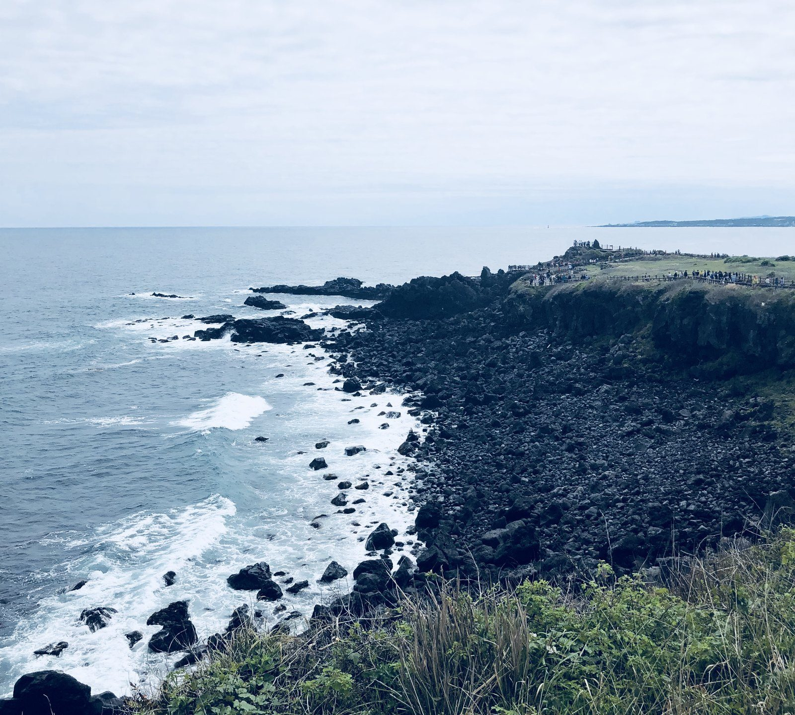
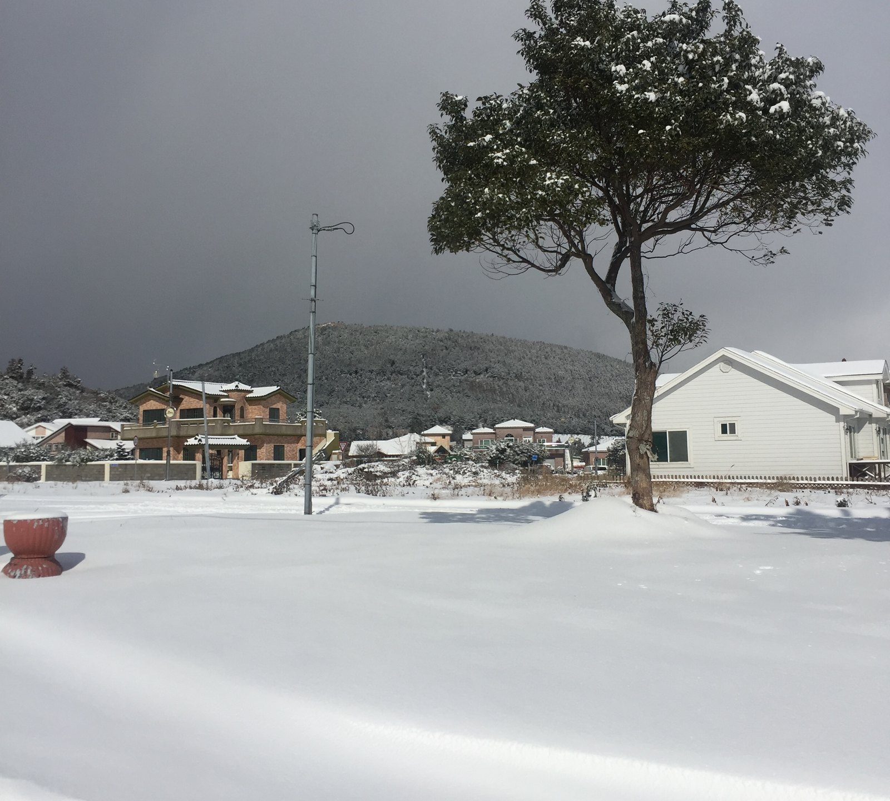

Jeju
A volcanic island off the south coast with black-rock beaches, crater hikes, tangerine farms and a slower pace than the mainland. Most visitors fly in and get around by rental car, bus or taxi.


Planning a trip to Jeju
Getting there
Flights from Seoul Gimpo to Jeju take about an hour and run all day; there are also flights from Busan and other cities, and some international routes. Ferries exist from the south coast but take much longer.
How long to stay
Three or four days lets you see the east (Seongsan Ilchulbong and the coast), the west (beaches and tea fields) and the south (waterfalls around Seogwipo), with one day for Hallasan or a slower walk on an Olle trail.
Getting around
Renting a car is the easiest way to see the island; you need an International Driving Permit. Buses reach most sights from Jeju City and Seogwipo but are slower and less frequent. Taxis are useful for short hops.
When to go
Jeju is milder than the mainland but very windy, especially in winter. Canola flowers and cherry blossoms come in late March and early April, summer is beach season, and autumn brings silver grass on the volcanic hills. Strong winds can delay flights, so keep a little slack in your plans.
Where to stay
Jeju City is close to the airport and practical for short stays. Seogwipo in the south suits waterfalls and the southern coast. Staying in the east or west for a night or two saves driving time.
What to see first
Climb Seongsan Ilchulbong, the volcanic crater on the east coast, ideally at sunrise. Walk a section of the Olle trail along the south coast near Seogwipo, with Jeongbang and Cheonjiyeon waterfalls nearby. On the west side, Hyeopjae Beach has pale sand and clear turquoise water, and the green tea fields around Osulloc are a calm stop. Fit enthusiasts can climb Hallasan, South Korea's highest mountain, starting early in the morning.
What to eat
Jeju black pork, grilled at the table, is the island's signature meal. Seafood is everywhere: try haemul ttukbaegi (seafood stew), abalone porridge, and dishes made from the catch of the haenyeo, the island's women divers. Hallabong, a sweet local citrus, appears in juices, desserts and gifts.
Good to know
Jeju is visa-free for many nationalities under its own rules; check the current conditions before you fly. Weather changes quickly, especially on Hallasan, so bring a wind layer in every season. Hallasan's summit trails need a free advance reservation, and trails close early in the day.
Places worth your time in Jeju
The Korean name is the one to show a taxi driver or paste into Naver Map or KakaoMap.
Seongsan Ilchulbong 성산일출봉
A volcanic crater rising out of the sea on the east coast. The stair climb to the rim takes 20 to 30 minutes, and sunrise is the classic time to go. Udo island is a short ferry ride from the nearby port.
Hyeopjae Beach 협재해수욕장
White sand, black lava rock and shallow turquoise water on the west coast, with the small island of Biyangdo straight ahead. Hallim Park is across the road.
Hamdeok Beach 함덕해수욕장
A wide, pale beach about 30 minutes east of Jeju City, with a short walk up Seoubong hill for the view. It is easy to reach by bus, and good even in winter, when the sea turns a milky green.
Hallasan 한라산
South Korea's highest mountain at 1,947 metres. The two summit trails, Seongpanak and Gwaneumsa, need a free advance reservation and an early start; Eorimok and Yeongsil are shorter and reach the high plateau but not the crater.
Jeju Five-Day Market 제주시민속오일시장
A big traditional market near the airport, held on dates ending in 2 and 7. Come for tangerines, dried fish, street snacks and a look at everyday island life.
Arte Museum Jeju 아르떼뮤지엄 제주
A large immersive media art space in Aewol, with rooms of projected waves, flowers and waterfalls. It is a useful plan for a rainy or very windy day.

